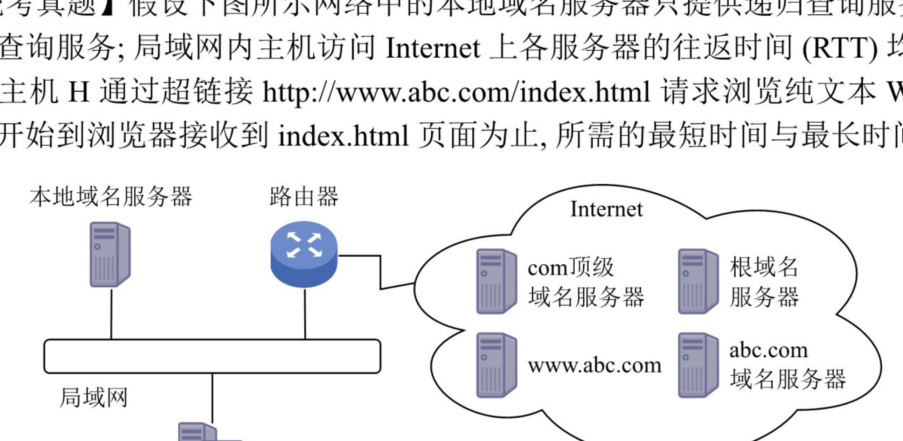
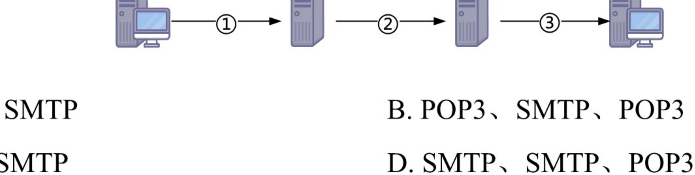
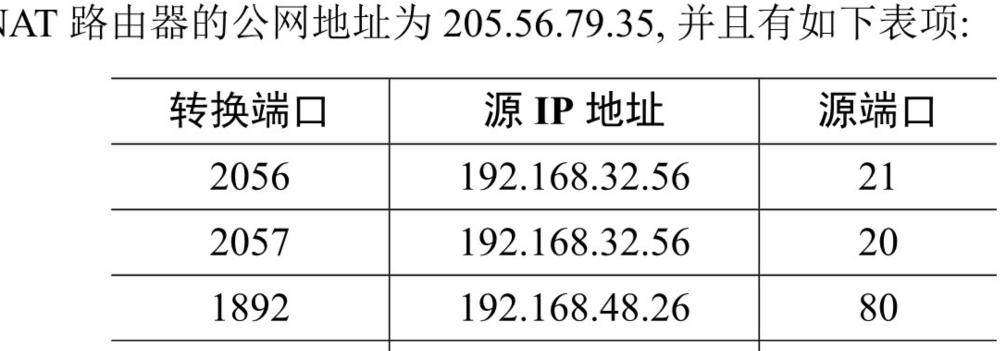
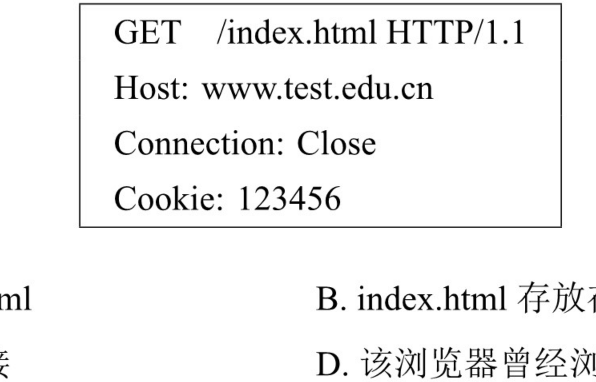
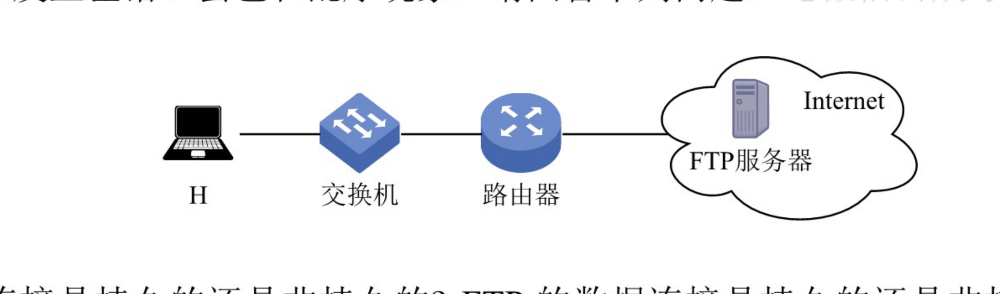
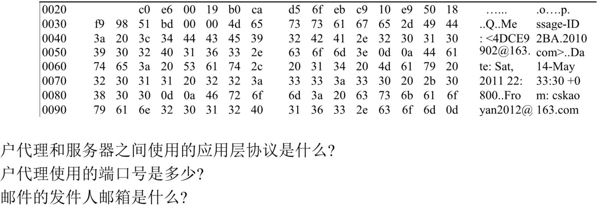
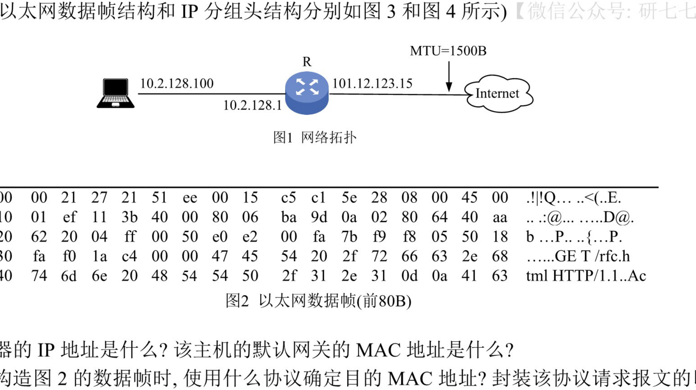
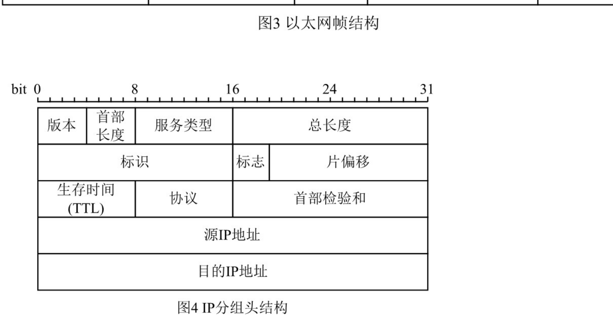
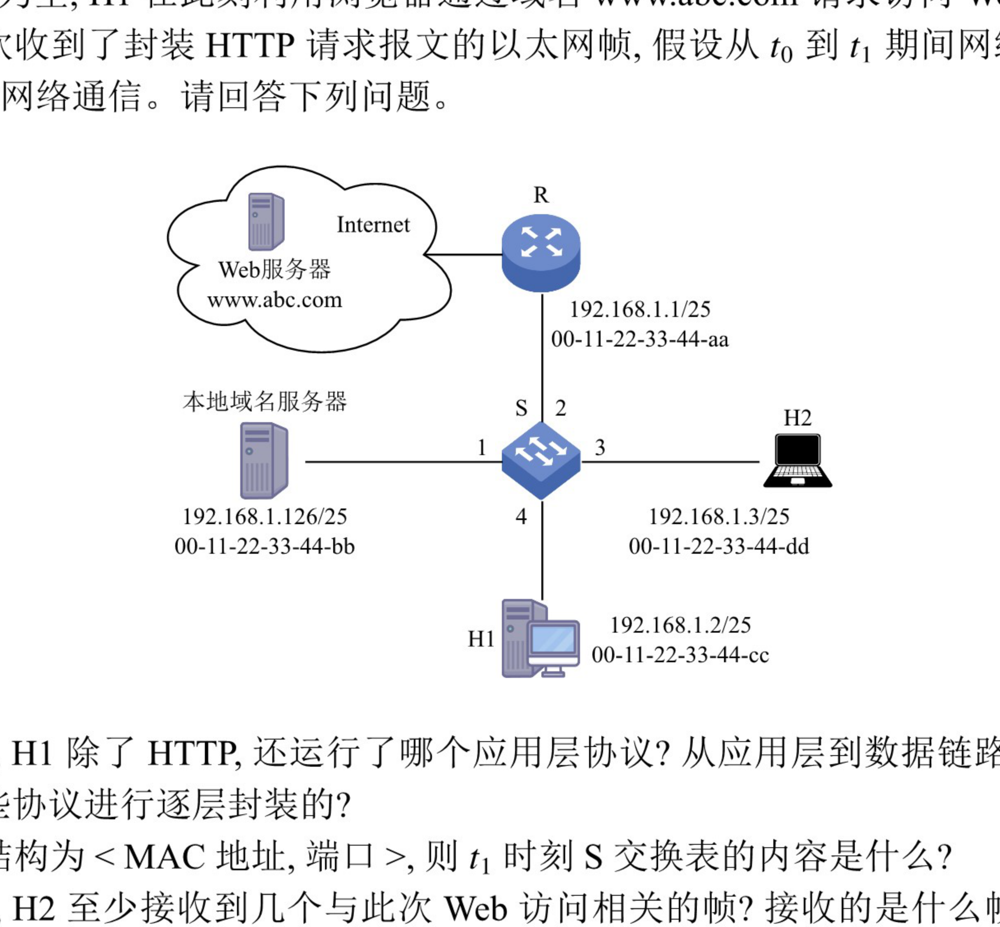

第6章 习题
题目取自王道《选择题做题本》《综合题做题本》· 选择题答案经答案速查逐题核对
应用层的计算题集中在"DNS 查询次数与时间、FTP 序号与拥塞窗口、HTTP 连接数与 RTT 数"三类，务必动手把每一步的时序画出来再对答案。概念题重点辨析：递归与迭代查询、控制连接与数据连接、SMTP 推与 POP3 拉、持续与非持续连接。
一、选择题 · 6.1 网络应用模型（第 1～6 题）
第 1 题单选
在客户/服务器模型中，客户指的是（ ）
- A. 请求方
- B. 响应方
- C. 硬件
- D. 软件
答案与解析
答案：A
解析：客户既不是硬件，又不是软件，只是服务的请求方，服务器才是响应方。客户/服务器模型描述的是进程之间服务与被服务的关系，而不是具体的硬件或软件实体。
第 2 题单选
用户提出服务请求，网络将用户请求传送到服务器；服务器执行用户请求，完成所要求的操作并将结果送回用户，这种工作模式称为（ ）
- A. C/S 模型
- B. P2P 模型
- C. CSMA/CD 模式
- D. 令牌环模式
答案与解析
答案：A
解析：用户提出服务请求，网络将用户请求传送到服务器；服务器执行用户请求，完成所要求的操作并将结果送回用户，这种工作模式称为客户/服务器模型，即 C/S 模型。CSMA/CD 和令牌环是局域网介质访问控制方式，与题干的"服务请求—响应"模式无关。
第 3 题单选
下面关于客户/服务器模型的描述，（ ）存在错误。
I. 客户端必须提前知道服务器的地址，而服务器则不需要提前知道客户端的地址
II. 客户端主要实现如何显示信息与收集用户的输入，而服务器主要实现数据的处理
III. 浏览器显示的内容来自服务器
IV. 客户端是请求方，即使连接建立后，服务器也不能主动发送数据
- A. I、IV
- B. III、IV
- C. 仅 IV
- D. 仅 III
答案与解析
答案：C
解析：在连接未建立前，服务器在某一个端口上监听。客户端是连接的请求方，客户端必须事先知道服务器的地址才能发出连接请求，而服务器则从客户端发来的数据包中获取客户端的地址，I 正确。一旦连接建立，服务器就能响应客户端请求的内容，服务器也能主动发送数据给客户端，用于一些消息的通知，如一些错误的通知，所以只有说法 IV 错误。
第 4 题单选
下列关于客户/服务器模型的说法中，错误的是（ ）
- A. 服务器专用于完成某些服务，而客户机则作为这些服务的使用者
- B. 客户机通常位于前端，服务器通常位于后端
- C. 客户机和服务器通过网络实现协同计算任务
- D. 客户机是面向任务的，服务器是面向用户的
答案与解析
答案：D
解析：客户的作用是根据用户需求向服务器发出服务请求，并将服务器返回的结果呈现给用户，因而是面向用户的；服务器专门用于完成某些服务、处理数据，是面向任务的。D 恰好把二者说反。A、B、C 均为对 C/S 模型的正确描述。
第 5 题单选
以下关于 P2P 概念的描述中，错误的是（ ）
- A. P2P 是网络节点之间采取对等方式直接交换信息的工作模式
- B. P2P 通信模式是指 P2P 网络中对等节点之间的直接通信能力
- C. P2P 网络是指与互联网并行建设的、由对等节点组成的物理网络
- D. P2P 实现技术是指为实现对等节点之间直接通信的功能所需要设计的协议、软件等
答案与解析
答案：C
解析：P2P 网络并不是与互联网并行建设的物理网络，而是在互联网之上由对等节点构成的逻辑覆盖网络（叠加网络），对等节点之间的直接通信仍依托底层互联网进行，C 错误。A、B、D 分别是对 P2P 工作模式、通信模式和实现技术的正确描述。
第 6 题单选 · 2019 统考真题
下列关于网络应用模型的叙述中，错误的是（ ）
- A. 在 P2P 模型中，节点之间具有对等关系
- B. 在客户/服务器 (C/S) 模型中，客户与客户之间可以直接通信
- C. 在 C/S 模型中，主动发起通信的是客户，被动通信的是服务器
- D. 在向多用�户分发一个文件时，P2P 模型通常比 C/S 模型所需的时间短
答案与解析
答案：B
解析：在 C/S 模型中，客户与客户之间不能直接通信，客户端之间的数据交互必须经由服务器中转，B 错误。P2P 模型中各节点地位对等、互为服务提供者与请求者，A 正确；C/S 模型中客户主动发起通信、服务器被动等待请求，C 正确；P2P 模型中每个节点在接收文件的同时也可向其他节点分发文件，因此在向多用户分发一个文件时，P2P 模型通常比 C/S 模型所需时间短，D 正确。
选择题 · 6.2 域名系统 DNS（第 7～20 题）
第 7 题单选
域名与（ ）具有一一对应的关系。
- A. IP 地址
- B. MAC 地址
- C. 主机
- D. 以上都不是
答案与解析
答案：D
解析：若一台主机通过两块网卡连接到两个网络（如服务器双线接入），则就具有两个 IP 地址，每个网卡对应一个 MAC 地址，显然这两个 IP 地址可以映射到同一个域名上。此外，多台主机也可以映射到同一个域名上（如负载均衡），一台主机也可以映射到多个域名上（如虚拟主机）。因此，选项 A、B、C 和域名均不具有一一对应的关系。
第 8 题单选
下列说法错误的是（ ）
- A. Internet 上提供客户访问的主机一定要有域名
- B. 同一域名在不同时间可能解析出不同的 IP 地址
- C. 多个域名可以指向同一台主机 IP 地址
- D. IP 子网中的主机可以由不同的域名服务器来维护其映射
答案与解析
答案：A
解析：Internet 上提供访问的主机一定要有 IP 地址，而不一定要有域名，选项 A 错误。域名在不同的时间可以解析出不同的 IP 地址，因此可以用多台服务器来分担负载，选项 B 正确。可以把多个域名指向同一台主机的 IP 地址，选项 C 正确。IP 子网中主机也可以由不同的域名服务器来维护其映射，选项 D 正确。
第 9 题单选
DNS 是基于（ ）模型的分布式系统。
- A. C/S
- B. B/S
- C. P2P
- D. 以上均不正确
答案与解析
答案：A
解析：DNS 是一个基于 C/S 模型的分布式数据库系统，主要用于域名和 IP 地址的映射。客户（解析器）向域名服务器发出查询请求，域名服务器返回解析结果。
第 10 题单选
域名系统 (DNS) 的组成不包括（ ）
- A. 域名空间
- B. 分布式数据库
- C. 域名服务器
- D. 从内部 IP 地址到外部 IP 地址的翻译程序
答案与解析
答案：D
解析：DNS 提供从域名到 IP 地址或从 IP 地址到域名的映射服务。它被设计成一个联机分布式数据库系统，并采用客户/服务器模式，域名的解析是由若干域名服务器程序完成的。从内部 IP 地址到外部 IP 地址的映射是由 NAT 实现的，用于缓解 IPv4 地址紧缺的问题，与域名系统无关。
第 11 题单选
互联网中域名解析依赖于由域名服务器组成的逻辑树。在域名解析过程中，主机上请求域名解析的软件不需要知道（ ）信息。
I. 本地域名服务器的 IP II. 本地域名服务器父节点的 IP III. 域名服务器树根节点的 IP
- A. I 和 II
- B. I 和 III
- C. II 和 III
- D. I、II 和 III
答案与解析
答案：C
解析：正常情况下，客户只需把域名解析请求发往本地域名服务器，其他事情都由本地域名服务器完成，并把最后结果返回给客户。所以主机只需要知道本地域名服务器的 IP（I 需要知道），而不需要知道本地域名服务器父节点的 IP 和域名服务器树根节点的 IP（II、III 不需要知道）。
第 12 题单选
在 DNS 的递归查询中，由（ ）给客户端返回地址。
- A. 最开始连接的服务器
- B. 最后连接的服务器
- C. 目的地址所在服务器
- D. 不确定
答案与解析
答案：A
解析：在递归查询中，每台不包含被请求信息的服务器都转到其他地方去查找，然后它再往回发送结果，所以客户端最开始连接的服务器（本地域名服务器）最终将返回正确的信息。
第 13 题单选
当本地域名服务器向根域名服务器查询一个域名时，根域名服务器返回一个负责该域名的顶级域名服务器的 IP 地址，让本地域名服务器再向该域名服务器查询，这种查询方式称为（ ）
- A. 递归查询
- B. 迭代查询
- C. 重定向查询
- D. 广播查询
答案与解析
答案：B
解析：迭代查询是指当一个域名服务器收到本地域名服务器发出的查询请求报文时，要么给出所要查询的 IP 地址，要么告诉本地服务器："你下一步应当向哪个 DNS 服务器进行查询"，然后让本地域名服务器进行后续的查询（而不替本地域名服务器进行后续的查询）。题干中根域名服务器只返回顶级域名服务器的 IP，后续查询仍由本地域名服务器完成，属于迭代查询。
第 14 题单选
一台主机要解析 www.cskaoyan.com 的 IP 地址，若这台主机配置的域名服务器为 202.120.66.68，因特网顶级域名服务器为 11.2.8.6，而存储 www.cskaoyan.com 的 IP 地址对应关系的域名服务器为 202.113.16.10，则这台主机解析该域名通常首先查询（ ）
- A. 202.120.66.68 域名服务器
- B. 11.2.8.6 域名服务器
- C. 202.113.16.10 域名服务器
- D. 可以从这 3 个域名服务器中任选一个
答案与解析
答案：A
解析：当这台主机发出对 www.cskaoyan.com 的 DNS 查询报文时，这个查询报文首先被送往该主机的本地域名服务器 202.120.66.68。本地域名服务器不能立即回答该查询时，就以 DNS 客户的身份向某一根域名服务器查询。但不管采用何种查询方式，首先都要查询本地域名服务器。
第 15 题单选
（ ）可以将其管辖的主机名转换为主机的 IP 地址。
- A. 本地域名服务器
- B. 根域名服务器
- C. 授权域名服务器
- D. 代理域名服务器
答案与解析
答案：C
解析：每台主机都必须在授权（权限）域名服务器处注册登记，授权域名服务器一定能够将其管辖的主机名转换为该主机的 IP 地址。本地域名服务器和根域名服务器只是辅助完成解析过程，不一定保存具体主机的映射。
第 16 题单选
若本地域名服务器无缓存，用户主机采用递归查询向本地域名服务器查询另一网络某主机域名对应的 IP 地址，而本地域名服务器采用迭代查询向其他域名服务器进行查询，则用户主机和本地域名服务器发送的域名请求条数分别为（ ）
- A. 1 条，1 条
- B. 1 条，多条
- C. 多条，1 条
- D. 多条，多条
答案与解析
答案：B
解析：用户主机向本地域名服务器采用递归查询，只需发送 1 条查询请求。本地域名服务器无缓存，因此还要进行后续的查询。本地域名服务器向其他域名服务器采用迭代查询，本地域名服务器分别向根域名服务器、顶级域名服务器、权限域名服务器发送多条查询请求。
第 17 题单选 · 2010 统考真题
若本地域名服务器无缓存，则在采用递归方法解析另一网络某主机域名时，用户主机和本地域名服务器发送的域名请求条数分别为（ ）
- A. 1 条，1 条
- B. 1 条，多条
- C. 多条，1 条
- D. 多条，多条
答案与解析
答案：A
解析：用户主机向本地域名服务器采用递归查询，只需发送 1 条请求。本地域名服务器无缓存，但因其向其他域名服务器也采用递归查询方式，故只需向根域名服务器发送 1 条请求，后续查询由被询问的服务器代为完成。因此，用户主机和本地域名服务器各自发送的域名请求条数均为 1。
第 18 题单选 · 2016 统考真题
假设所有域名服务器均采用迭代查询方式进行域名解析。当主机访问规范域名为 www.abc.xyz.com 的网站时，本地域名服务器在完成该域名解析的过程中，可能发出 DNS 查询的最少和最多次数分别是（ ）
- A. 0，3
- B. 1，3
- C. 0，4
- D. 1，4
答案与解析
答案：C
解析：最少情况：若本地域名服务器已缓存该域名的解析结果，则无须发出任何 DNS 查询，最少为 0 次。最多情况：因所有服务器均采用迭代查询，在最坏情况下，本地域名服务器需要依次向根域名服务器、顶级域名服务器（com）、权限域名服务器（xyz.com）和次级权限域名服务器（abc.xyz.com）发起查询，共 4 次，因此最多为 4 次。
第 19 题单选 · 2018 统考真题
下列 TCP/IP 应用层协议中，可以使用传输层无连接服务的是（ ）
- A. FTP
- B. DNS
- C. SMTP
- D. HTTP
答案与解析
答案：B
解析：FTP 用于文件传输，SMTP 用于电子邮件发送，HTTP 用于网页传输，三者均要求可靠传输，故在传输层使用有连接的 TCP 服务。DNS 对可靠性的要求相对较低，且追求效率与低开销，因此在传输层通常使用无连接的 UDP 服务。
第 20 题单选 · 2020 统考真题
假设下图所示网络中的本地域名服务器只提供递归查询服务，其他域名服务器均只提供迭代查询服务；局域网内主机访问 Internet 上各服务器的往返时间 (RTT) 均为 10ms，忽略其他各种时延。若主机 H 通过超链接 http://www.abc.com/index.html 请求浏览纯文本 Web 页 index.html，则从单击超链接开始到浏览器接收到 index.html 页面为止，所需的最短时间与最长时间分别是（ ）

- A. 10ms，40ms
- B. 10ms，50ms
- C. 20ms，40ms
- D. 20ms，50ms
答案与解析
答案：D
解析：题中 RTT 指局域网内主机或本地域名服务器访问 Internet 上各服务器的往返时间，H 与本地域名服务器间的通信时延忽略不计。
最短时间：若 H 本地有域名缓存，则无须 DNS 查询，直接与 www.abc.com 建立 TCP 连接并请求资源。TCP 三次握手需 1.5RTT，第三次握手可捎带 HTTP 请求，服务器返回页面需 0.5RTT，共 2RTT = 20ms。
最长时间：H 向本地域名服务器发起递归查询（时延忽略），本地域名服务器依次迭代查询根域名服务器、顶级域名服务器（com）、abc.com 域名服务器，需 3RTT = 30ms；随后建立 TCP 连接并获取页面需 2RTT = 20ms。共 30 + 20 = 50ms。
选择题 · 6.3 文件传输协议 FTP（第 21～34 题）
第 21 题单选
文件传输协议 (FTP) 的一个主要特征是（ ）
- A. 允许客户指明文件的类型但不允许指明文件的格式
- B. 不允许客户指明文件的类型但允许指明文件的格式
- C. 允许客户指明文件的类型与格式
- D. 不允许客户指明文件的类型与格式
答案与解析
答案：C
解析：FTP 提供交互式访问，允许客户指明文件的类型与格式，并允许文件具有存取权限。
第 22 题单选
下列关于 FTP 工作模型的描述中，错误的是（ ）
- A. FTP 使用控制连接、数据连接来完成文件的传输
- B. 用于控制连接的 TCP 连接在服务器端使用的熟知端口号为 21
- C. 用与控制连接的 TCP 连接在客户端使用的端口号为 20
- D. 服务器端由控制进程、数据进程两部分组成
答案与解析
答案：C
解析：在服务器端，控制连接使用 TCP 的 21 号端口，数据连接使用 TCP 的 20 号端口；而在客户端，控制连接和数据连接的 TCP 端口号都是由客户端系统自动分配的。需要注意的是，当我们说 FTP 使用 20、21 号端口，HTTP 使用 80 号端口，SMTP 使用 25 号端口时，都是指相应协议的服务器端所使用的端口号，而客户端使用系统自动分配的端口号向这些服务的熟知端口发起连接，故 C 错误。
第 23 题单选
控制信息是带外传送的协议是（ ）
- A. HTTP
- B. SMTP
- C. FTP
- D. POP
答案与解析
答案：C
解析：带外传送是指控制信息与数据信息通过不同的逻辑信道传送。例如，FTP 使用一个单独的控制连接来传输控制信息，而数据连接用于传送文件。带内传送是指控制信息与数据信息通过同一个逻辑信道传送，例如 HTTP 的请求和响应报文都是在同一个 TCP 连接上进行的。
第 24 题单选
下列关于 FTP 连接的叙述中，正确的是（ ）
- A. 控制连接先于数据连接被建立，并先于数据连接被释放
- B. 数据连接先于控制连接被建立，并先于控制连接被释放
- C. 控制连接先于数据连接被建立，并晚于数据连接被释放
- D. 数据连接先于控制连接被建立，并晚于控制连接被释放
答案与解析
答案：C
解析：FTP 客户首先连接服务器的 21 号端口，建立控制连接（控制连接在整个会话期间一直保持打开），然后建立数据连接，在数据传送完毕后，数据连接最先释放，控制连接最后释放。
第 25 题单选
FTP 客户发起对 FTP 服务器连接的第一阶段是建立（ ）
- A. 传输连接
- B. 数据连接
- C. 会话连接
- D. 控制连接
答案与解析
答案：D
解析：FTP 工作时使用两个连接：控制连接和数据连接。FTP 客户对 FTP 服务器发起连接时，首先建立控制连接，即向服务器的 21 号 TCP 端口发起连接；然后建立数据连接（20 号 TCP 端口）。FTP 并没有传输连接和会话连接的说法。
第 26 题单选
FTP 中作为服务器一方的进程，通过监听（ ）端口得知有无服务请求。
- A. 53
- B. 80
- C. 20
- D. 21
答案与解析
答案：D
解析：FTP 服务器通过监听熟知端口 21（控制端口）得知有无服务请求。20 号端口用于数据连接，53 号是 DNS 服务器端口，80 号是 HTTP 服务器端口。
第 27 题单选
下列关于 FTP 的叙述中，错误的是（ ）
- A. FTP 可以实现异构网络中计算机之间的文件传送
- B. 在进行文件传输时，FTP 客户端和服务器之间需建立两个连接
- C. FTP 服务器主进程在 20 端口上监听客户端的连接请求
- D. FTP 使用 TCP 进行可靠传输
答案与解析
答案：C
解析：因为 FTP 屏蔽了各计算机系统的细节，所以 FTP 适用于异构网络中计算机之间的文件传送，A 正确。当进行文件传输时，FTP 客户端和服务器之间需建立两个并行的控制连接和数据连接，B 正确。FTP 服务器主进程在熟知端口 21 上监听客户端的服务请求，C 错误。FTP 在传输层使用 TCP 进行可靠传输，D 正确。
第 28 题单选
一个 FTP 用户发送了一个 LIST 命令来获取服务器的文件列表，这时服务器应通过（ ）端口来传输该列表。
- A. 21
- B. 20
- C. 22
- D. 19
答案与解析
答案：B
解析：FTP 中数据连接的端口是 20，而文件的列表是通过数据连接来传输的。21 号端口只用于传输 FTP 命令等控制信息。
第 29 题单选
下列关于 FTP 的叙述中，错误的是（ ）
- A. FTP 可以在不同类型的操作系统之间传送文件
- B. FTP 并不适合用在两个计算机之间共享读写文件
- C. 控制连接在整个 FTP 会话期间一直保持
- D. 客户端默认使用端口 20 与服务器建立数据传输连接
答案与解析
答案：D
解析：控制连接建立后，服务器进程用自己传送数据的熟知端口 20 与客户进程所提供的端口号建立数据传输连接（默认为 PORT 模式），即客户进程的端口号是客户进程自己提供的，客户端并不使用端口 20，D 错误。FTP 屏蔽了各计算机系统的细节，可以在不同类型的操作系统之间传送文件，A 正确；FTP 并不适合如 NFS 那样在两台计算机之间共享读写文件，B 正确；控制连接在整个 FTP 会话期间一直保持，C 正确。
第 30 题单选
当一台计算机从 FTP 服务器下载文件时，在该 FTP 服务器上对数据进行封装的 5 个转换步骤是（ ）
- A. 比特，数据帧，数据报，数据段，数据
- B. 数据，数据段，数据报，数据帧，比特
- C. 数据报，数据段，数据，比特，数据帧
- D. 数据段，数据报，数据帧，比特，数据
答案与解析
答案：B
解析：FTP 服务器的数据要经过应用层、传输层、网络层、数据链路层及物理层。因此，对应的封装是数据（应用层）、数据段（传输层）、数据报（网络层）、数据帧（数据链路层），最后是比特（物理层）。
第 31 题单选
FTP 支持两种方式的传输：ASCII 方式和 Binary（二进制）方式。通常文本文件采用（ ）方式，而图像、声音等非文本文件采用（ ）方式传输。
- A. ASCII, Binary
- B. Binary, ASCII
- C. ASCII, ASCII
- D. Binary, Binary
答案与解析
答案：A
解析：FTP 支持 ASCII 和 Binary 两种方式的传输，非加密文本文件通常采用 ASCII 方式传输，而图像、声音等非文本文件采用 Binary 方式传输。本题可能有所超纲，了解即可。
第 32 题单选
直接封装 FTP、DNS、DHCP 报文的协议分别是（ ）
- A. TCP、UDP、UDP
- B. UDP、TCP、TCP
- C. TCP、UDP、IP
- D. UDP、UDP、UDP
答案与解析
答案：A
解析：FTP 需要保证数据传输的可靠性，因此采用 TCP 作为传输层协议。在 DHCP 的应用中，客户在分配到 IP 地址前无法使用 TCP 建立连接，因此只能利用 UDP 进行无连接的交互。UDP 具有简化通信、更高效、低延迟的特性，能满足 DNS 查询对快速响应和高并发的需求，因此 DNS 和 DHCP 都使用 UDP 封装。
第 33 题单选 · 2009 统考真题
FTP 客户和服务器间传递 FTP 命令时，使用的连接是（ ）
- A. 建立在 TCP 之上的控制连接
- B. 建立在 TCP 之上的数据连接
- C. 建立在 UDP 之上的控制连接
- D. 建立在 UDP 之上的数据连接
答案与解析
答案：A
解析：对于 FTP 文件传输，为了保证可靠性，选择 TCP，排除 C 和 D。FTP 的控制信息是带外传送的，即 FTP 使用了一个分离的控制连接来传送命令，因此答案为选项 A。
第 34 题单选 · 2017 统考真题
下列关于 FTP 的叙述中，错误的是（ ）
- A. 数据连接在每次数据传输完毕后就关闭
- B. 控制连接在整个会话期间保持打开状态
- C. 服务器与客户端的 TCP 20 端口建立数据连接
- D. 客户端与服务器的 TCP 21 端口建立控制连接
答案与解析
答案：C
解析：FTP 使用控制连接和数据连接，控制连接存在于整个 FTP 会话过程中，数据连接在每次文件传输时才建立，传输结束就关闭，选项 A 和 B 正确。默认情况（PORT 模式）下 FTP 服务器使用 TCP 20 端口进行数据连接，使用 TCP 21 端口进行控制连接，这里的端口号是指 FTP 服务器的端口号，因此选项 C 错误（不是与客户端的 20 端口建立连接）、选项 D 正确。此外还需注意，FTP 服务器是否使用 TCP 20 端口建立数据连接与传输模式有关，PORT 模式使用 TCP 20 端口，PASV 模式由服务器随机选定。
选择题 · 6.4 电子邮件（第 35～46 题）
第 35 题单选
互联网用户的电子邮件地址格式必须是（ ）
- A. 用户名 @ 单位网络名
- B. 单位网络名 @ 用户名
- C. 邮箱所在主机的域名 @ 用户名
- D. 用户名 @ 邮箱所在主机的域名
答案与解析
答案：D
解析：电子邮件是互联网最基本、最常用的服务功能。要使用电子邮件服务，首先要拥有自己的电子邮件地址，其格式为：用户名@邮箱所在主机的域名。
第 36 题单选
SMTP 基于传输层的（ ）协议，POP3 基于传输层的（ ）协议。
- A. TCP, TCP
- B. TCP, UDP
- C. UDP, UDP
- D. UDP, UDP
答案与解析
答案：A
解析：SMTP 和 POP3 都是基于 TCP 的协议，提供可靠的邮件通信，二者使用的服务器端熟知端口分别为 25 和 110。
第 37 题单选
SMTP 服务器使用的端口号是（ ）
- A. 21
- B. 25
- C. 80
- D. 110
答案与解析
答案：B
解析：SMTP 服务器使用的熟知端口号是 25。21 是 FTP 控制端口，80 是 HTTP 端口，110 是 POP3 端口。
第 38 题单选
用 Firefox（浏览器）在 Gmail 中向邮件服务器发送邮件时，使用的是（ ）协议。
- A. HTTP
- B. POP3
- C. P2P
- D. SMTP
答案与解析
答案：A
解析：在基于万维网的电子邮件中，用户浏览器与 Hotmail 或 Gmail 的邮件服务器之间的邮件发送或接收使用的是 HTTP，而仅在不同邮件服务器之间传送邮件时才使用 SMTP。
第 39 题单选
用户代理只能发送而不能接收电子邮件时，可能是（ ）地址错误
- A. POP3
- B. SMTP
- C. HTTP
- D. Mail
答案与解析
答案：A
解析：用户代理使用 POP3 协议接收邮件。通常用户在配置电子邮件用户代理时需要设置邮件服务器的 POP3 地址（如 pop3.gmail.com），若这个地址设置错误，则会导致用户无法接收邮件。用户代理中的 SMTP 地址错误时会导致无法发送邮件。收件人 E-mail 地址错误时，可能会发错人，也可能会导致投递失败（不存在的地址）。
第 40 题单选
不能用于用户从邮件服务器接收电子邮件的协议是（ ）
- A. HTTP
- B. POP3
- C. SMTP
- D. IMAP
答案与解析
答案：C
解析：SMTP 是一种"推"协议，用于发送端用户代理与发送端服务器之间及发送端服务器与接收端服务器之间，不能用于接收端用户从服务器上读取邮件。常用的邮件读取协议有 POP3、HTTP 和 IMAP。大家平时通过浏览器登录 163 邮箱、Gmail 邮箱时，使用的邮件读取协议就是 HTTP。IMAP 是另一个专用于读取邮件的协议，它要比 POP3 复杂得多，功能也更为强大。
第 41 题单选
下列关于电子邮件格式的说法中，错误的是（ ）
- A. 电子邮件内容包括邮件头与邮件体两部分
- B. 邮件头中发信人地址 (From:)、发送时间、收信人地址 (To:) 及邮件主题 (Subject:) 是由系统自动生成的
- C. 邮件体是实际要传送的信函内容
- D. MIME 允许电子邮件系统传输文字、图像、语音与视频等多种信息
答案与解析
答案：B
解析：邮件头是由多项内容构成的，其中一部分是由系统自动生成的，如发信人地址 (From:)、发送时间；另一部分是由发件人输入的，如收信人地址 (To:)、邮件主题 (Subject:) 等，B 错误。A、C、D 均为正确说法。
第 42 题单选 · 2012 统考真题
若用户 1 与用户 2 之间发送和接收电子邮件的过程如下图所示，则图中①、②、③阶段分别使用的应用层协议可以是（ ）

- A. SMTP、SMTP、SMTP
- B. POP3、SMTP、POP3
- C. POP3、SMTP、SMTP
- D. SMTP、SMTP、POP3
答案与解析
答案：D
解析：SMTP 采用推的通信方式，即用户代理向邮件服务器及邮件服务器之间发送邮件时，SMTP 客户主动将邮件推送到 SMTP 服务器。因此①（用户 1 → 用户 1 的邮件服务器）和②（用户 1 的邮件服务器 → 用户 2 的邮件服务器）都使用 SMTP。而 POP3 采用拉的通信方式，即用户读取邮件时，用户代理向邮件服务器发出请求，拉取用户邮箱中的邮件，故③（用户 2 的邮件服务器 → 用户 2）使用 POP3。
第 43 题单选 · 2013 统考真题
下列关于 SMTP 的叙述中，正确的是（ ）
I. 只支持传输 7 比特 ASCII 码内容 II. 支持在邮件服务器之间发送邮件
III. 支持从用户代理向邮件服务器发送邮件 IV. 支持从邮件服务器向用户代理发送邮件
- A. 仅 I、II 和 III
- B. 仅 I、II 和 IV
- C. 仅 I、III 和 IV
- D. 仅 II、III 和 IV
答案与解析
答案：A
解析：根据 6.4 节可知，SMTP 用于用户代理向邮件服务器发送邮件，或在邮件服务器之间发送邮件（II、III 正确，IV 错误，从邮件服务器向用户代理传送邮件使用 POP3/IMAP）；且 SMTP 只支持传输 7 比特 ASCII 码内容，非 ASCII 内容须经 MIME 转换（I 正确）。
第 44 题单选 · 2015 统考真题
通过 POP3 协议接收邮件时，使用的传输层服务类型是（ ）
- A. 无连接不可靠的数据传输服务
- B. 无连接可靠的数据传输服务
- C. 有连接不可靠的数据传输服务
- D. 有连接可靠的数据传输服务
答案与解析
答案：D
解析：POP3 基于传输层的 TCP 协议，TCP 提供面向连接的、可靠的数据传输服务。
第 45 题单选 · 2018 统考真题
无须转换即可由 SMTP 直接传输的内容是（ ）
- A. JPEG 图像
- B. MPEG 视频
- C. EXE 文件
- D. ASCII 文本
答案与解析
答案：D
解析：SMTP 只支持传输 7 比特 ASCII 码内容，JPEG 图像、MPEG 视频和 EXE 文件都是二进制数据，须借助 MIME 转换成 ASCII 码后才能经 SMTP 传输；ASCII 文本无须转换即可直接传输。
第 46 题单选 · 2025 统考真题
下列关于 POP3 协议的叙述中，正确的是（ ）
I. 支持用户代理从邮件服务器读取邮件 II. 支持用户代理向邮件服务器发送邮件
III. 支持邮件服务器之间发送与接收邮件 IV. 支持通过一条 TCP 连接收取多封邮件
- A. 仅 I、IV
- B. 仅 II、III
- C. 仅 I、II、III
- D. 仅 I、III、IV
答案与解析
答案：A
解析：POP3 是邮件读取协议，仅支持用户代理从邮件服务器读取（拉取）邮件，不支持发送邮件，也不用于邮件服务器之间的传送（发送方向均由 SMTP 完成），故 I 正确、II 和 III 错误。POP3 在一次 TCP 连接的会话中可以下载多封邮件后再断开连接，IV 正确。
选择题 · 6.5 万维网 WWW（第 47～65 题）
第 47 题单选
下面的（ ）协议中，客户机与服务器之间采用面向无连接的协议进行通信。
- A. FTP
- B. SMTP
- C. DNS
- D. HTTP
答案与解析
答案：C
解析：DNS 采用 UDP 来传送数据，UDP 是一种面向无连接的协议。FTP、SMTP、HTTP 都基于面向连接的 TCP。
第 48 题单选
从协议分析的角度，WWW 服务的第一步操作是浏览器对服务器的（ ）
- A. 请求地址解析
- B. 传输连接建立
- C. 请求域名解析
- D. 会话连接建立
答案与解析
答案：C
解析：建立浏览器与服务器之间的连接需要知道服务器的 IP 地址和端口号（80 端口是熟知端口），而访问站点时浏览器从用户那里得到的是 WWW 站点的域名，所以浏览器必须首先向 DNS 请求域名解析，获得服务器的 IP 地址后，才能请求建立 TCP 连接。
第 49 题单选
TCP 和 UDP 的一些端口保留给一些特定的应用使用。为 HTTP 保留的端口号为（ ）
- A. TCP 的 80 端口
- B. UDP 的 80 端口
- C. TCP 的 25 端口
- D. UDP 的 25 端口
答案与解析
答案：A
解析：HTTP 在传输层使用 TCP，端口号为 80。TCP 的 25 号端口是为 SMTP 保留的。
第 50 题多空选择
从某个已知的 URL 获得一个万维网文档时，若该万维网服务器的 IP 地址开始时并不知道，则需要用到的应用层协议有 (①)，需要用到的传输层协议有 (②)。
- ① A. FTP、HTTP B. DNS、FTP C. DNS、HTTP D. TELNET、HTTP
- ② A. UDP B. TCP C. UDP、TCP D. TCP、IP
答案与解析
答案：①C ②C
解析：因为不知道服务器的 IP 地址，所以先要用 DNS 进行域名解析，然后使用 HTTP 进行客户和服务器之间的交互，① 选 C。需要用到的传输层协议是 UDP（DNS 使用）和 TCP（HTTP 使用），② 选 C。
第 51 题单选
万维网上的每个页面都有唯一的地址，这些地址统称为（ ）
- A. IP 地址
- B. 域名地址
- C. 统一资源定位符
- D. WWW 地址
答案与解析
答案：C
解析：统一资源定位符 (URL) 负责标识万维网上的各种文档，并使每个文档在整个万维网的范围内具有唯一的标识符 URL。
第 52 题单选
使用鼠标单击一个万维网文档时，若该文档除有文本外，还有三幅 gif 图像，则在 HTTP/1.0 中需要建立（ ）次 TCP 连接。
- A. 4
- B. 3
- C. 2
- D. 1
答案与解析
答案：A
解析：HTTP 在传输层用的是 TCP。HTTP/1.0 只支持非持续连接，所以每请求一个对象需要建立一次 TCP 连接，传输 1 个基本 html 对象和 3 个 gif 对象，共需建立 4 次 TCP 连接。
第 53 题单选
仅需 Web 服务器对 HTTP 报文进行响应，但不需要返回请求对象时，HTTP 请求报文应该使用的方法是（ ）
- A. GET
- B. PUT
- C. POST
- D. HEAD
答案与解析
答案：D
解析：使用 HEAD 方法时服务器可对 HTTP 报文进行响应，但不会返回请求对象，其作用主要是调试。
第 54 题单选
HTTP 是一个无状态协议，然而 Web 站点经常希望能够识别用户，这时需要用到（ ）
- A. Web 缓存
- B. Cookie
- C. 条件 GET
- D. 持久连接
答案与解析
答案：B
解析：可以在 HTTP 中使用 Cookie 保存 HTTP 服务器和客户之间传递的状态信息，从而在无状态的 HTTP 之上实现用户识别。
第 55 题单选
下列关于 Cookie 的说法中，错误的是（ ）
- A. Cookie 仅存储在服务器端
- B. Cookie 是服务器产生的
- C. Cookie 会威胁客户的隐私
- D. Cookie 的作用是跟踪用户的访问和状态
答案与解析
答案：A
解析：Cookie 是一个存储在用户主机中的文本文件。它由服务器产生，作为识别用户的手段。服务器的后端数据库记录了用户在 Web 站点上的活动，因此这些信息（如用户的个人信息及购物的偏好等）有可能被出卖给第三方，从而威胁到用户的隐私。Cookie 存储在用户主机（客户端）中，而非仅存储在服务器端，A 错误。
第 56 题单选
以下关于非持续连接 HTTP 特点的描述中，错误的是（ ）
- A. HTTP 支持非持续连接与持续连接
- B. HTTP/1.0 使用非持续连接，而 HTTP/1.1 的默认方式为持续连接
- C. 非持续连接中对每次请求/响应都要建立一次 TCP 连接
- D. 非持续连接中读取一个包含 100 个图片对象的 Web 页面，需要打开和关闭 100 次 TCP 连接
答案与解析
答案：D
解析：非持续连接对每次请求/响应都要建立一次 TCP 连接。在浏览器请求一个包含 100 个图片对象的 Web 页面时，服务器需要传输 1 个基本 HTML 文件和 100 个图片对象，因此共有 101 个对象，需要打开和关闭 TCP 连接 101 次，D 错误。A、B、C 均为正确描述。
第 57 题单选
若浏览器支持并行 TCP 连接，使用非持久的 HTTP/1.0 协议请求浏览 1 个 Web 页，该页中引用同一网站上的 7 个小图像文件，则从浏览器为传输 Web 页请求建立 TCP 连接开始，到接收完所有内容为止，所需的往返时间 RTT 数至少是（ ）
- A. 3
- B. 4
- C. 8
- D. 9
答案与解析
答案：B
解析：建立第一个 TCP 连接需要 1RTT，请求并接收 Web 页需要 1RTT。浏览器支持并行 TCP 连接，因此在收到 Web 页后可同时建立 7 个并行的 TCP 连接，以请求和接收 7 个小图像文件。因此，总往返时间 RTT 数 = 1RTT（建立第一个 TCP 连接）+ 1RTT（请求 Web 页）+ 1RTT（建立 7 个并行的 TCP 连接）+ 1RTT（请求 7 个小图像文件）= 4RTT。
第 58 题单选
假设主机通过 HTTP/1.1（流水线方式）请求浏览某个 Web 服务器 S 上的 Web 页 rfc.html，rfc.html 引用了同目录下的 3 个 JPEG 小图像（假设只有在收到 rfc.html 后才能发送对其引用图像的请求），一次请求响应的时间为 RTT，忽略其他各种时延，不考虑拥塞控制和流量控制，则从发出 HTTP 请求报文开始到收到全部内容为止，所耗费的时间是（ ）
- A. 2RTT
- B. 2.5RTT
- C. 4RTT
- D. 4.5RTT
答案与解析
答案：A
解析：从发出 HTTP 请求报文开始，所以此时 TCP 连接已经建立。本题采用了流水线的持续连接。第 1 个 RTT 请求并收到 html 页面，收到 html 页面后才能发送对其引用小图像的请求，所以第 2 个 RTT 请求并收到 3 幅小图像，合计耗费 2RTT。
第 59 题单选
主机通过超链接 http://www.cskaoyan.com/index.html 请求浏览 Web 页 index.html，若浏览器使用流水线方式的 HTTP/1.1 协议，该 Web 页引用了同一网站上的 7 个小图像文件，假设主机到本地域名服务器和互联网上各服务器的往返时延均为 1RTT。本地域名服务器只提供递归查询服务，其他域名服务器只提供迭代查询服务，忽略其他所有时延，则从点击超链接开始到浏览器接收到所有内容为止，所需的往返时间 RTT 数最多是（ ）
- A. 5
- B. 6
- C. 7
- D. 8
答案与解析
答案：C
解析：主机点击超链接获取 html 页面，大致分为以下过程：① 向本地域名服务器发送递归查询请求，若本地域名服务器中有相应的 IP 地址缓存，则直接向主机返回相应的 IP 地址，只需 1RTT。否则，本地域名服务器还需要依次向根域名服务器、com 顶级域名服务器、cskaoyan.com 域名服务器发送迭代查询请求，查询到相应的 IP 地址最多需要 4RTT。② 建立初始 TCP 连接需要 1RTT，请求并接收 Web 页需要 1RTT，支持流水线传输方式，因此在收到 Web 页后可以同时发送 7 个小图像文件的请求，第②步的总往返时间是 1RTT（建立连接）+ 1RTT（请求 Web 页）+ 1RTT（请求 7 个小图像文件）= 3RTT。综上所述，所需的 RTT 数最多是 4 + 3 = 7。
第 60 题单选
主机 H 通过持久的 HTTP/1.1 协议请求服务器 S 上的 5KB 数据，最大段长 MSS = 1KB，往返时间 RTT = 50ms，最长报文段寿命 MSL = 800ms，假设双方的接收窗口都足够大，当 H 收到来自 S 的第一个携带数据的报文段后，立即向 S 发送连接释放报文段（注：连接释放报文段可以携带数据信息或确认信息）。从 H 请求与 S 建立 TCP 连接时刻起，到 H 进入 CLOSED 状态为止，所需的时间至少是（ ）
- A. 1000ms
- B. 1200ms
- C. 1600ms
- D. 1800ms
答案与解析
答案：D
解析：主机 H 在建立 TCP 连接的第 3 个握手报文段中向服务器 S 请求数据，初始时 S 的发送窗口 = 拥塞窗口 = 1MSS = 1KB。H 收到 1KB 数据后，向 S 请求释放 TCP 连接，但 S 还有 4KB 数据要发送。因此，S 收到 H 发来的 FIN 段和确认后，拥塞窗口变为 2KB，发送窗口也随之变化，再用 1RTT 时间 S 给 H 发送 2KB 数据。最后 S 向 H 发送 FIN 段，这个 FIN 段携带了最后的 2KB 数据，H 收到 FIN 段后，向 S 发送 ACK 段，并启动时间等待计时器，等待 2MSL 的时间进入 CLOSED 状态，整个过程共耗时 4RTT + 2MSL = 200 + 1600 = 1800ms。
第 61 题单选
假定一个 NAT 路由器的公网地址为 205.56.79.35，并且有如下表项：

它收到一个源 IP 地址为 192.168.32.56、源端口为 80 的分组，其动作是（ ）
- A. 转换地址，将源 IP 变为 205.56.79.35，端口变为 2056，然后发送到公网
- B. 添加一个新的条目，转换 IP 地址及端口然后发送到公网
- C. 不转发，丢弃该分组
- D. 直接将分组转发到公网
答案与解析
答案：C
解析：熟知端口号 80 是 HTTP 的服务器端口号，因此说明 IP 地址为 192.168.32.56（私有地址）的主机是 Web 服务器，源端口号为 80 说明该分组是 Web 服务器发出的 HTTP 响应分组。若该 HTTP 响应分组是对外网主机发出的 HTTP 请求的响应，则 NAT 表中一定存在相应的表项（否则 HTTP 请求分组不可能到达 Web 服务器），但在 NAT 表中找不到（表中 192.168.32.56 对应的源端口是 21 和 20，而非 80）。所以只可能是对内网主机发出的 HTTP 请求的响应，该分组不需要通过路由器转发，因此路由器丢弃该分组。
第 62 题单选 · 2014 统考真题
使用浏览器访问某大学的 Web 网站主页时，不可能使用到的协议是（ ）
- A. PPP
- B. ARP
- C. UDP
- D. SMTP
答案与解析
答案：D
解析：接入网络时可能会用到 PPP，选项 A 可能用到；计算机不知道某主机的 MAC 地址时，用 IP 地址查询相应的 MAC 地址会用到 ARP，选项 B 可能用到；访问 Web 网站时，若 DNS 缓冲没有存储相应域名的 IP 地址，用域名查询相应的 IP 地址时要使用 DNS，而 DNS 是基于 UDP 的，所以选项 C 可能用到；SMTP 只有使用邮件客户端发送邮件，或邮件服务器向其他邮件服务器发送邮件时才会用到，单纯地访问 Web 网页不可能用到，答案为选项 D。
第 63 题单选 · 2015 统考真题
某浏览器发出的 HTTP 请求报文如下。下列叙述中，错误的是（ ）

- A. 该浏览器请求浏览 index.html
- B. index.html 存放在 www.test.edu.cn 上
- C. 该浏览器请求使用持续连接
- D. 该浏览器曾经浏览过 www.test.edu.cn
答案与解析
答案：C
解析：Connection 是连接方式字段，Close 表示非持续连接方式，keep-alive 表示持续连接方式。报文中 Connection: Close 表明使用非持续连接，C 错误。GET /index.html 表明请求浏览 index.html，A 正确；Host: www.test.edu.cn 表明 index.html 存放在该服务器上，B 正确；Cookie 值由服务器产生，HTTP 请求报文中有 Cookie 表明曾访问过 www.test.edu.cn 服务器，D 正确。
第 64 题单选 · 2022 统考真题
假设主机 H 通过 HTTP/1.1 请求浏览某 Web 服务器 S 上的 Web 页 news408.html，news408.html 引用了同目录下的 1 幅图像，news408.html 文件大小为 1MSS（最大段长），图像文件大小为 3MSS，H 访问 S 的往返时间 RTT=10ms，忽略 HTTP 响应报文的首部开销和 TCP 段传输时延。若 H 已完成域名解析，则从 H 请求与 S 建立 TCP 连接时刻起，到接收到全部内容止，所需的时间至少是（ ）
- A. 30ms
- B. 40ms
- C. 50ms
- D. 60ms
答案与解析
答案：B
解析：HTTP/1.1 默认使用持续连接，所有请求都是连续发送的。要求最少时间，理想的情况是 TCP 在第 3 次握手的报文段中捎带了 HTTP 请求，以及传输过程中的慢开始阶段不考虑拥塞。假设接收端有足够大的缓存空间，即发送窗口等于拥塞窗口，共需要经过：第 1 个 RTT，进行 TCP 连接建立的前两次握手；第 2 个 RTT，主机 H 发送第 3 次握手报文并捎带了对 html 文件的 HTTP 请求，TCP 连接刚建立时服务器 S 的发送窗口 = 1MSS，服务器 S 发送大小为 1MSS 的 html 文件；第 3 个 RTT，主机 H 发送对 html 文件的确认并捎带了对图形文件的 HTTP 请求，服务器 S 收到确认后发送窗口变为 2MSS，然后服务器 S 发送大小为 2MSS 的图像文件；第 4 个 RTT，主机 H 向服务器 S 发送对收到的部分图像文件的确认，服务器 S 收到确认后发送窗口变为 4MSS，然后服务器 S 发送剩下的 1MSS 图像文件，完成传输。共需要 4RTT，即 40ms。
第 65 题单选 · 2024 统考真题
若浏览器不支持并行 TCP 连接，使用非持久的 HTTP/1.0 协议请求浏览 1 个 Web 页，该页中引用同一网站上的 7 个小图像文件，则从浏览器为传输 Web 页请求建立 TCP 连接开始，到接收完所有内容为止，所需要的往返时间 RTT 数至少是（ ）
- A. 4
- B. 9
- C. 14
- D. 16
答案与解析
答案：D
解析：浏览器不支持并行 TCP 连接，使用非持续的 HTTP/1.0 协议，因此每传输一个 Web 页和小图像文件都要建立一次 TCP 连接。第一次建立 TCP 连接时，前两次握手花 1RTT，第三次握手报文段中可以携带 HTTP 请求，服务器收到请求后返回 Web 页，共花 2RTT。之后，每传输一个图像文件都要花 2RTT。因此，到接收完所有内容，需要的总时间至少是 2×8 = 16RTT。注意，若浏览器支持并行 TCP 连接，则请求 Web 页仍要花 2RTT，但收到 Web 页后，可建立 7 个并行的 TCP 连接请求图像文件，传输图像的过程仅花 2RTT，总时间为 4RTT。
二、综合题
综合题 16.2 域名系统
DNS 使用 UDP 而非 TCP，若一个 DNS 分组丢失，没有自动恢复，那么这会引起问题吗？若会，应该如何解决？
答案与解析
解答：会引起问题。UDP 不提供可靠传输，DNS 请求或响应分组丢失后不会自动重传，客户将收不到解析结果，域名解析失败。解决方法：(1) DNS 客户程序（解析器）自身设置超时重传机制，若在规定时间内未收到响应，就重传 DNS 查询报文；(2) 对要求可靠传输的场景（如区域传送传送大量记录时），可改用 TCP 进行 DNS 传输。
综合题 26.2 域名系统
为何要引入域名的概念？举例说明域名转换过程。域名服务器中的高速缓存的作用是什么？
答案与解析
解答：IP 地址是点分十进制的数字串，难以记忆，也难以体现主机的用途与归属；引入域名（层次化的字符名字）便于用户记忆和使用，再由域名系统完成域名到 IP 地址的转换。
域名转换过程举例：主机要访问 www.abc.com 时，主机向本地域名服务器以递归方式发出查询；若本地域名服务器缓存中没有该映射，则它以迭代方式先询问根域名服务器，根域名服务器返回 com 顶级域名服务器的地址；本地域名服务器再询问 com 顶级域名服务器，得到 abc.com 权限域名服务器的地址；最后向 abc.com 权限域名服务器查询，获得 www.abc.com 的 IP 地址并返回给主机。
高速缓存的作用：域名服务器把最近查询过的"域名—IP 地址"映射保存在高速缓存中，再次收到相同查询时可直接应答，不必再向域名服务器树的上层逐级查询，从而减少域名解析的时间，也减轻根域名服务器等上层服务器的负担。
综合题 36.3 文件传输协议
文件传输协议的主要工作过程是怎样的？主进程和从属进程各起什么作用？
答案与解析
解答：FTP 的主要工作过程如下：在进行文件传输时，FTP 客户所发出的传送请求通过控制连接发送给服务器端的控制进程，并在整个会话期间一直保持打开，但控制连接不用来传送文件。服务器端的控制进程在接收到 FTP 客户发送来的文件传输请求后，就创建数据传送进程和数据连接，数据连接用来连接客户端和服务器端的数据传送进程，数据传送进程实际完成对文件的传送，在传送完毕后关闭"数据传送连接"，并结束运行。
FTP 的服务器进程由两大部分组成：一个主进程，负责接收新的请求；若干从属进程，负责处理单个请求。
综合题 46.3 文件传输协议
为什么 FTP 要使用两个独立的连接，即控制连接和数据连接？
答案与解析
解答：在 FTP 的实现中，客户与服务器之间采用了两条传输连接，其中控制连接用于传输各种 FTP 命令，而数据连接用于文件的传送。之所以这样设计，是因为使用两条独立的连接可使 FTP 变得更加简单、更容易实现、更有效率。同时在文件传输过程中，还可以利用控制连接控制传输过程，如客户可以请求终止、暂停传输等（控制信息与数据分离，即"带外传送"）。
综合题 56.3 文件传输协议
主机 A 想下载文件 ftp://ftp.abc.edu.cn/file，大致描述下载过程中主机和服务器的交互过程。
答案与解析
解答：大致过程如下：
① 建立一个 TCP 连接到服务器 ftp.abc.edu.cn 的 21 号端口，然后发送登录账号和密码。
② 服务器返回登录成功信息后，主机 A 打开一个随机端口，并将该端口号发送给服务器。
③ 主机 A 发送读取文件命令，内容为 get file，服务器使用 20 号端口建立一个 TCP 连接到主机 A 的随机打开的端口。
④ 服务器把文件内容通过第二个连接发送给主机 A，传输完毕后连接关闭。
综合题 66.3 文件传输协议 · 2023 统考真题
某网络拓扑如下图所示，主机 H 登录 FTP 服务器后，向服务器上传一个大小为 18000B 的文件 F。假设 H 为传输 F 建立数据连接时，选择的初始序号为 100，MSS = 1000B，拥塞控制初始阈值为 4MSS，RTT = 10ms，忽略 TCP 段的传输时延；在 F 的传输过程中，H 均以 MSS 段向服务器发送数据，且未发生差错、丢包和失序现象。请回答下列问题。

(1) FTP 的控制连接是持久的还是非持久的？FTP 的数据连接是持久的还是非持久的？当 H 登录 FTP 服务器时，建立的 TCP 连接是控制连接还是数据连接？
(2) 当 H 通过数据连接发送 F 时，F 的第一个字节的序号是多少？在断开数据连接过程中，FTP 服务器发送的第二次挥手 ACK 段的确认序号是多少？
(3) 在 H 通过数据连接发送 F 的过程中，当 H 收到确认序号为 2101 的确认段时，H 的拥塞窗口调整为多少？收到确认序号为 7101 的确认段时，H 的拥塞窗口调整为多少？
(4) H 从请求建立数据连接开始，到确认 F 已被服务器全部接收为止，至少需要多长时间？期间应用层数据平均发送速率是多少？
答案与解析
解答：
(1) 在 FTP 会话期间，控制连接一直处于保持状态，是持久的。当每次需要传输文件时，FTP 客户和服务器之间会建立一个临时的数据连接，用于传输文件数据，是非持久的。控制连接用于传输命令和控制信息，登录操作涉及身份验证、发送命令等控制信息，因此 H 登录 FTP 服务器时建立的 TCP 连接是控制连接。
(2) 建立连接时，FTP 客户发送的第一次握手 SYN 段要消耗一个序号，选择的初始序号为 100，因此发送文件 F 时，第一个字节的序号为 101。文件 F 共有 18000 个字节，需占用 18000 个序号，释放连接时，FTP 客户发送的第一次挥手 FIN 段也要消耗一个序号，所以该 FIN 段的序号为 18101，因此 TCP 服务器发送的第二次挥手 ACK 段的确认序号是 18102。
(3) 拥塞窗口按传输轮次分析：初始 cwnd = 1MSS（阈值 4MSS）。第 1 轮发送 1 个报文段，收到确认后 cwnd 增大到 2MSS；第 2 轮发送 2 个报文段。当 H 收到确认序号为 2101 的确认段时，表示服务器已收到 \(2101-101=2000\)B 数据，即 2 个报文段，此时还处在第 2 个传输轮次（慢开始阶段），拥塞窗口还未达到阈值，发送端每收到一个确认，拥塞窗口就加 1，所以此时拥塞窗口为 \(2+1=3\)MSS。当 H 收到确认序号为 7101 的确认段时，表示服务器已收到 \(7101-101=7000\)B，即 7 个报文段；在第 2 轮结束收到第 3 个报文段的确认后，拥塞窗口已增大到阈值 4MSS，第 3 个传输轮次转入拥塞避免阶段（每轮次加 1MSS），第 3 轮结束收到第 7 个报文段的确认时，拥塞窗口调整为 \(4+1=5\)MSS。
(4) 文件 F 共 \(18000\text{B} \div 1000\text{B} = 18\) 个 MSS 段。建立数据连接的三次握手前两次耗时 1RTT，第三次握手即可携带数据，随后各传输轮次发送的段数为 1、2、4、5、6（\(1+2+4+5+6=18\)，共 5 轮，每轮 1RTT）。故从请求建立数据连接开始到确认 F 全部接收至少需要 \(1+5=6\) 个 RTT，即 60ms。期间应用层数据平均发送速率 \(= 18000\times 8\text{b} \div 60\text{ms} = 2.4\text{Mb/s}\)。
综合题 76.4 电子邮件
电子邮件系统使用 TCP 传送邮件，为什么有时会遇到邮件发送失败的情况？为什么有时对方会收不到发送的邮件？
答案与解析
解答：TCP 只能保证"收件方服务器收到了邮件"，但邮件从发送方到收件人还要经过多个环节，任一环节失败都会导致发送失败或对方收不到：
(1) 用户代理与发送端邮件服务器之间、发送端服务器与接收端服务器之间建立 TCP 连接时，若对方服务器关机、故障或网络不通，连接无法建立，邮件发送失败；
(2) 收件人地址写错（用户名或域名不存在）时，接收端服务器无法投递，邮件会被退回，表现为发送失败；
(3) 收件人邮箱已满（超过配额）时，接收端服务器拒绝接收；
(4) 邮件在服务器队列中重试投递超过规定期限仍不成功时，服务器放弃投递并通知发件人；
(5) 邮件可能被接收方服务器的反垃圾机制过滤、隔离或删除，导致对方收不到。此外邮件发送失败时，一般会以"邮件投递通知"（退信）的形式告知发件人失败原因。
综合题 86.4 电子邮件
MIME 与 SMTP 的关系是怎样的？
答案与解析
解答：SMTP 只能传送 7 比特 ASCII 码文本，不能直接传送图像、语音、视频等非 ASCII 数据。MIME（多用途互联网邮件扩展）并非要取代 SMTP，而是在 SMTP 之上的一种扩展：它增加了邮件主体结构的定义，定义了非 ASCII 数据的编码规则（如 Base64、引用可打印编码），将图像、声音、视频等非 ASCII 数据转换成 ASCII 码形式后，再交由 SMTP 进行传送；同时 MIME 在邮件首部增加了 MIME-Version、Content-Type、Content-Transfer-Encoding 等字段以说明邮件内容的类型和编码方式。因此二者的关系可概括为：MIME 是对 SMTP 的功能补充，负责"内容格式与编码"，SMTP 负责"邮件的传送"。
综合题 96.4 电子邮件
用户主机上的电子邮件用户代理与邮件服务器建立了连接，现截获一个 TCP 报文段，如下图所示。图中显示了该报文段的前 126 个字节的十六进制及 ASCII 码内容。TCP 首部长度为 20B。请回答：

(1) 用户代理和服务器之间使用的应用层协议是什么？
(2) 用户代理使用的端口号是多少？
(3) 该邮件的发件人邮箱是什么？
答案与解析
解答：
(1) 报文段的 ASCII 内容是明文的邮件头信息（Message-ID、Date、From 等字段），且从 (2) 可知目的端口为 25（SMTP 服务器端口），因此用户代理与邮件服务器之间使用的是 SMTP 协议（用户代理在向邮件服务器发送邮件）。
(2) TCP 首部前 4 个字节为源端口号和目的端口号：截获内容的开头 "c0 e6 00 19" 中，源端口为十六进制 0xc0e6 = 49382，目的端口为十六进制 0x0019 = 25（SMTP 熟知端口）。用户代理（客户）使用的端口号是 49382。
(3) 从 ASCII 内容中可见 "From: cskaoyan2012@163.com"，因此该邮件的发件人邮箱是 cskaoyan2012@163.com。
综合题 106.5 万维网
在浏览器中输入 http://cskaoyan.com 并按回车，直到王道论坛的首页显示在其浏览器中，请问在此过程中，按照 TCP/IP 模型，从应用层到网络层都用到了哪些协议？
答案与解析
解答：
1）应用层。HTTP：WWW 访问协议；DNS：域名解析服务。
2）传输层。TCP：HTTP 提供可靠的数据传输；UDP：DNS 使用 UDP 传输。
3）网络层。IP：IP 包传输和路由选择；ICMP：提供网络传输中的差错检测；ARP：将本机的默认网关 IP 地址映射成物理 MAC 地址。
综合题 116.5 万维网
在如下条件下，计算使用非持续方式和持续方式请求一个 Web 页面所需的时间：
(1) 测试的 RTT 的平均值为 150ms，一个 gif 对象的平均发送时延为 35ms。
(2) 一个 Web 页面中有 10 幅 gif 图片，Web 页面的基本 HTML 文件、HTTP 请求报文、TCP 握手报文大小忽略不计。
(3) TCP 三次握手的第三步中携带一个 HTTP 请求。
(4) 使用非流水线方式。
答案与解析
解答：每次进行 TCP 三次握手时，前两次握手消耗 1RTT = 150ms，第 3 次握手的报文段携带客户对 HTML 文件的请求，因此请求和接收基本 HTML 文件耗时 1RTT = 150ms（其大小忽略不计时，发送时延为 0ms）。
在非持续连接方式下：
第一次建立 TCP 连接并传送 html 文件所需的时间为 \(t_{html} = 150 + 150 = 300\)ms；
每次建立 TCP 连接并传送一个 gif 文件所需的时间为 \(t_{gif} = 150 + 150 + 35 = 335\)ms；
所以总时间 \(t_\text{总} = t_{html} + t_{gif}\times 10 = 300 + 335\times 10 = 3650\)ms。
在持续连接方式下：
只需要建立一次 TCP 连接，然后传送 html 文件和 10 个 gif 文件。
总时间 \(t_\text{总} = t_{建立TCP} + t_{html} + t_{gif}\times 10 = 150 + 150 + (150+35)\times 10 = 2150\)ms。
综合题 126.5 万维网 · 2011 统考真题
某主机的 MAC 地址为 00-15-C5-C1-5E-28，IP 地址为 10.2.128.100（私有地址）。下图 1 是网络拓扑，图 2 是该主机进行 Web 请求的一个以太网数据帧前 80B 的十六进制及 ASCII 码内容。（注：以太网数据帧结构和 IP 分组头结构分别如图 3 和图 4 所示）


(1) Web 服务器的 IP 地址是什么？该主机的默认网关的 MAC 地址是什么？
(2) 该主机在构造图 2 的数据帧时，使用什么协议确定目的 MAC 地址？封装该协议请求报文的以太网帧的目的 MAC 地址是什么？
(3) 假设 HTTP/1.1 协议以持续的非流水线方式工作，一次请求-响应时间为 RTT，rfc.html 页面引用了 5 幅 JPEG 小图像。问从发出图 2 中的 Web 请求开始到浏览器收到全部内容为止，需要多少个 RTT？
(4) 该帧封装的 IP 分组经过路由器 R 转发时，需修改 IP 分组头中的哪些字段？
答案与解析
解答：
(1) 以太网帧的数据部分是 IP 数据报，只要数出相应字段所在的字节即可。由图 3 可知以太网帧首部有 \(6+6+2=14\)B，由图 4 可知 IP 数据报首部的目的 IP 地址字段前有 \(4\times 4=16\)B，从图 2 的帧第 1 字节开始数 \(14+16=30\)B，得到目的 IP 地址为 40 aa 62 20（十六进制数），转换成十进制数为 64.170.98.32。由图 2 可知以太网帧的前 6 字节 00-21-27-21-51-ee 是目的 MAC 地址，即为主机的默认网关 10.2.128.1 端口的 MAC 地址。
(2) 使用 ARP 协议确定目的 MAC 地址。ARP 请求报文以广播方式发送，封装它的以太网帧的目的 MAC 地址为 ff-ff-ff-ff-ff-ff（广播地址）。
(3) 持续的非流水线方式下，每次请求-响应耗时 1RTT：请求并接收 rfc.html 需要 1RTT，之后逐个请求 5 幅 JPEG 图像各需 1RTT。因此从发出 Web 请求开始到收到全部内容共需要 \(1+5=6\) 个 RTT。
(4) 该帧封装的 IP 分组经过路由器 R 转发时，需修改 IP 分组头中的生存时间（TTL）字段（每经过一跳减 1），TTL 改变后还需重新计算首部校验和字段。（若发生分片，还涉及标识、标志、片偏移等字段的变化。）
综合题 136.5 万维网 · 2021 统考真题
某网络拓扑如下图所示，以太网交换机 S 通过路由器 R 与 Internet 互联。路由器部分接口、本地域名服务器、H1、H2 的 IP 地址和 MAC 地址如图中所示。在 \(t_0\) 时刻 H1 的 ARP 表和 S 的交换表均为空，H1 在此时刻利用浏览器通过域名 www.abc.com 请求访问 Web 服务器，在 \(t_1\) 时刻（\(t_1 > t_0\)）S 第一次收到了封装 HTTP 请求报文的以太网帧，假设从 \(t_0\) 到 \(t_1\) 期间网络未发生任何与此次 Web 访问无关的网络通信。请回答下列问题。

(1) 从 \(t_0\) 到 \(t_1\) 期间，H1 除了 HTTP，还运行了哪个应用层协议？从应用层到数据链路层，该应用层协议报文是通过哪些协议进行逐层封装的？
(2) 若 S 的交换表结构为 <MAC 地址，端口>，则 \(t_1\) 时刻 S 交换表的内容是什么？
(3) 从 \(t_0\) 到 \(t_1\) 期间，H2 至少接收到几个与此次 Web 访问相关的帧？接收的是什么帧？帧的目的 MAC 地址是什么？
答案与解析
解答：
(1) H1 访问 www.abc.com 前需先通过域名获取 Web 服务器的 IP 地址，因此还运行了 DNS 协议。DNS 报文的逐层封装：DNS 报文封装在 UDP 段中（DNS 使用 UDP，目的端口 53），UDP 段封装在 IP 数据报中，IP 数据报再封装成以太网帧（数据链路层）发送。由于 H1 的 ARP 表为空，封装前还需先用 ARP 协议获得默认网关（路由器 R 接口 192.168.1.1/25）的 MAC 地址。
(2) 从 \(t_0\) 到 \(t_1\) 期间，H1 先后与本地域名服务器和网关 R 通信。S 通过自学习记录收到帧的源 MAC 地址与进入端口：H1 先通过 ARP 获得本地域名服务器（00-11-22-33-44-bb）的 MAC 地址并完成 DNS 查询，本地域名服务器返回的 ARP 响应帧和 DNS 响应帧都从端口 1 进入，S 学到 <00-11-22-33-44-bb, 1>；H1 的 DNS 查询帧和 HTTP 请求帧都从端口 4 进入，S 学到 <00-11-22-33-44-cc, 4>；之后 H1 通过 ARP 获得网关 R（00-11-22-33-44-aa）的 MAC 地址，只有发往外部网络的帧才经 R 从端口 2 方向进入 S（如 R 返回的 ARP 响应帧），S 学到 <00-11-22-33-44-aa, 2>。因此 \(t_1\) 时刻 S 交换表的内容为：<00-11-22-33-44-cc, 4>、<00-11-22-33-44-bb, 1>、<00-11-22-33-44-aa, 2>。
(3) H2 至少接收到 2 个帧。H1 的 ARP 表为空，它先向本地域名服务器发送 ARP 查询（广播），后又向网关 R 发送 ARP 查询（广播）。这两个 ARP 请求帧的目的 MAC 地址均为 ff-ff-ff-ff-ff-ff（广播地址），S 收到广播帧后会向除进入端口外的所有端口（包括端口 3 所连的 H2）泛洪转发，因此 H2 至少接收到 2 个封装 ARP 请求报文的帧，帧的目的 MAC 地址均为 ff-ff-ff-ff-ff-ff。